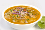

Alimenta la página con tus propias recetas
Esta página fue diseñada con el objetivo de informar al usuario sobre recetas culinarias, tanto las preescritas como las nuevas que son agregadas por varios usuarios que también aportan al recetario.
♫ Esperamos que este contenido sea de su gusto ♪